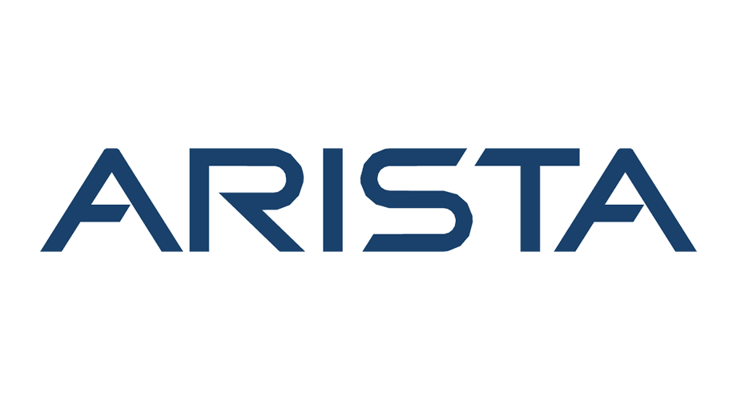

A Collection of My Favorite Projects.
Continuously expanding...
Analyzation of CICIDS2017
A deep analysis of labelled network flows using an Elastic Cloud ELK stack, identifying anomalous behavior on a network indicating botnet, brute force, port scan, and DDoS attacks.

AWS Web Application Deployment
The deployment of a web application using Amazon Web Services, with the services EC2, S3, IAM, CloudWatch, Backup, Billing, and Cloudshell.

Arista Networks
A full run-down of a titan networking company, Arista Networks, regarding their mission, ethics and security compliance, code of ethics, and security operations.
Vulnerability Management 101
Finding and remediating vulnerabilities on Windows 10 and Windows XP machines using Tenable Nessus.